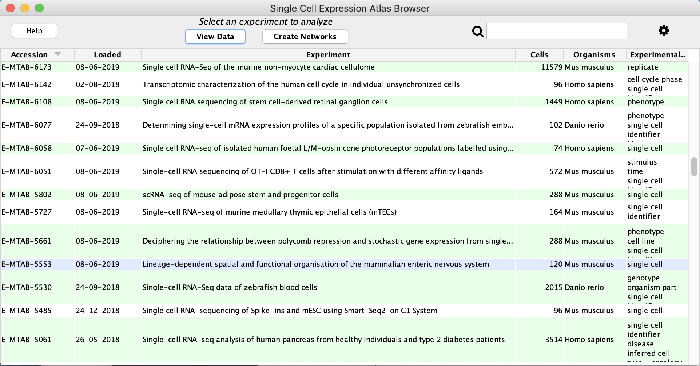
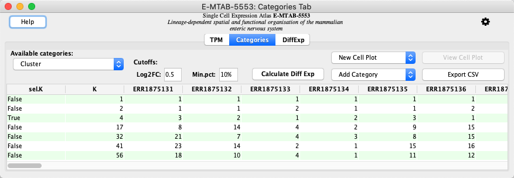

scNetViz - Single-cell RNASeq analysis
scNetViz is a Cytoscape app designed to support the biological interpretation of scRNAseq experiments, it is available from the Cytoscape App Store.
This tutorial includes a basic workflow starting with browsing a single cell expression atlas from within Cytoscape, exploring a particular dataset, performing differential expression analysis, generating networks from the top genes, and functionally characterizing and visualizing the networks. The workflow also includes alternative instructions for loading an experiment from local files.
Setup
- Install and launch the latest version of Cytoscape.
- Install the scNetViz app and stringApp via
Apps → App Manager .
It is also possible to load an experiment into scNetViz from local files. To try this, download the experimental data, and unzip the data into a folder with the name E-MTAB-5553.
Load Data
- Launch Cytoscape. In the
Apps menu, selectscNetViz → Load Experiment → From Single Cell Expression Atlas , or click the icon in the Cytoscape Toolbar. - In the
Single Cell Experiment Atlas (SCEA), click on the column header for theAccession column to sort it. - Locate the experiment with acession number E-MTAB-5553 and click on the row to highlight it. Click
View Data to load the data.

Calculate Differential Expression
The data opens the
- In the
Categories Tab locate the clustering result with a sel.K value of True. This represents the best clustering result for the data. - Click the
Calculate Diff Exp button to calculate differential expression.

Create Networks
The
- Click the
Create Networks button to create networks. This will create networks by querying the STRING database for the protein products of genes that satisfy theNetwork Analysis cutoffs based on FDR and Log2FC, or Max genes count.
Create Networks
In this case, 4 networks are created; one for each cluster and one for all the clusters collectively. In the

Functional Enrichment Analysis
- Click on one of the clusters in the
Network Panel to select it. - In the
Get Enrichment section of theScNetViz tab, leave the default seletions as-is and clickRetrieve Table . - The functional enrichment results will be loaded in a new
STRING Enrichment panel in theTable Panel below the network. - Click the
Draw charts using default color palette button .
. - Repeat these steps for the remaining networks.
Exporting Networks
Cytoscape provides a number of ways to export results and visualizations:
- As an image:
File → Export → Network to Image... - To a public repository:
File → Export → Network to NDEx , orFile → Export → Collection to NDEx - As a Cytoscape JSON file:
File → Export → Network to File and select Cytoscape.js JSON as the format.